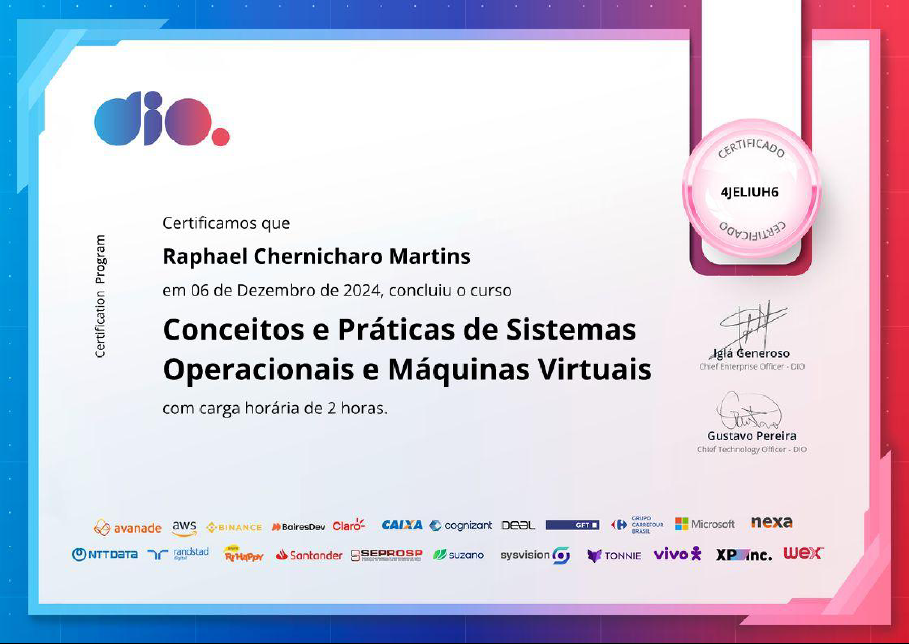
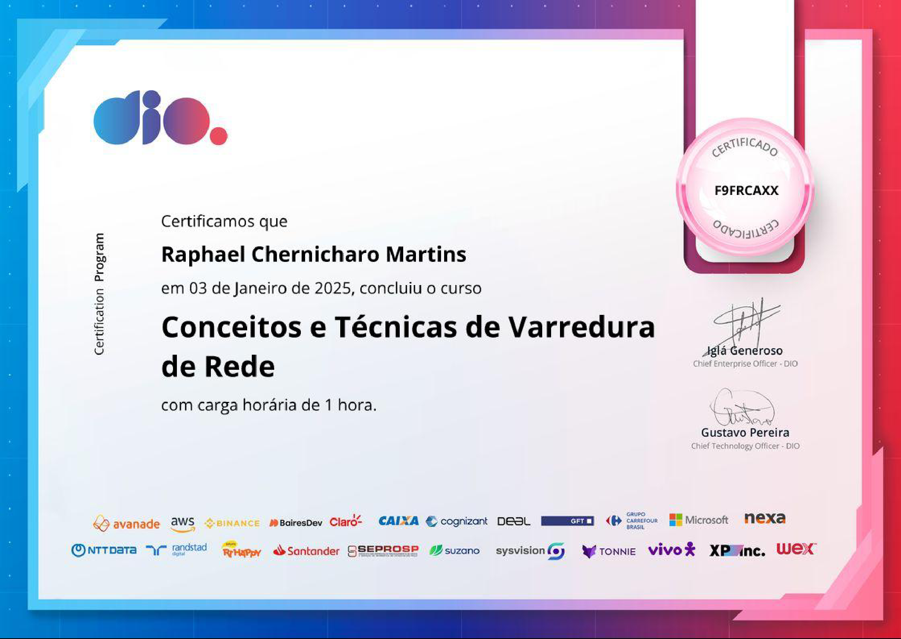
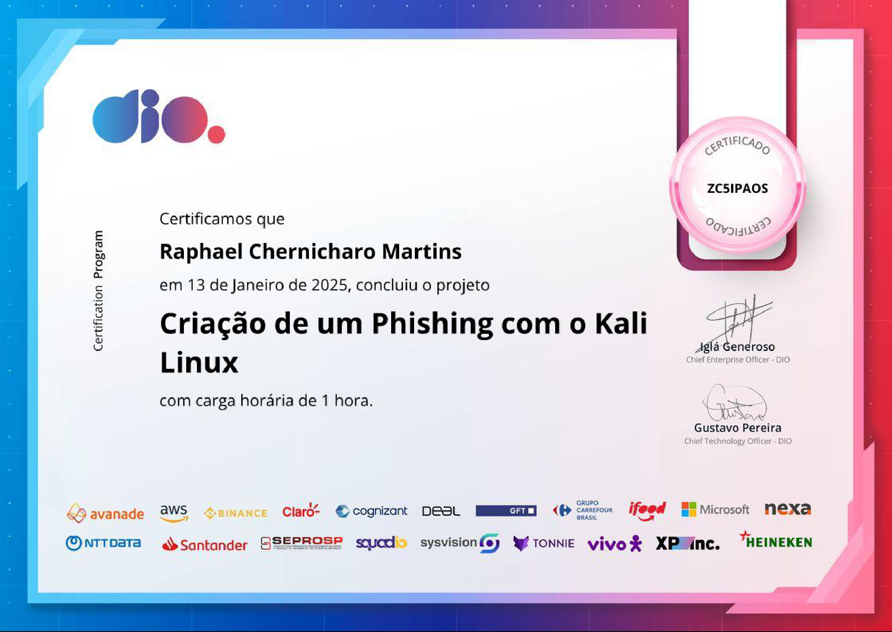
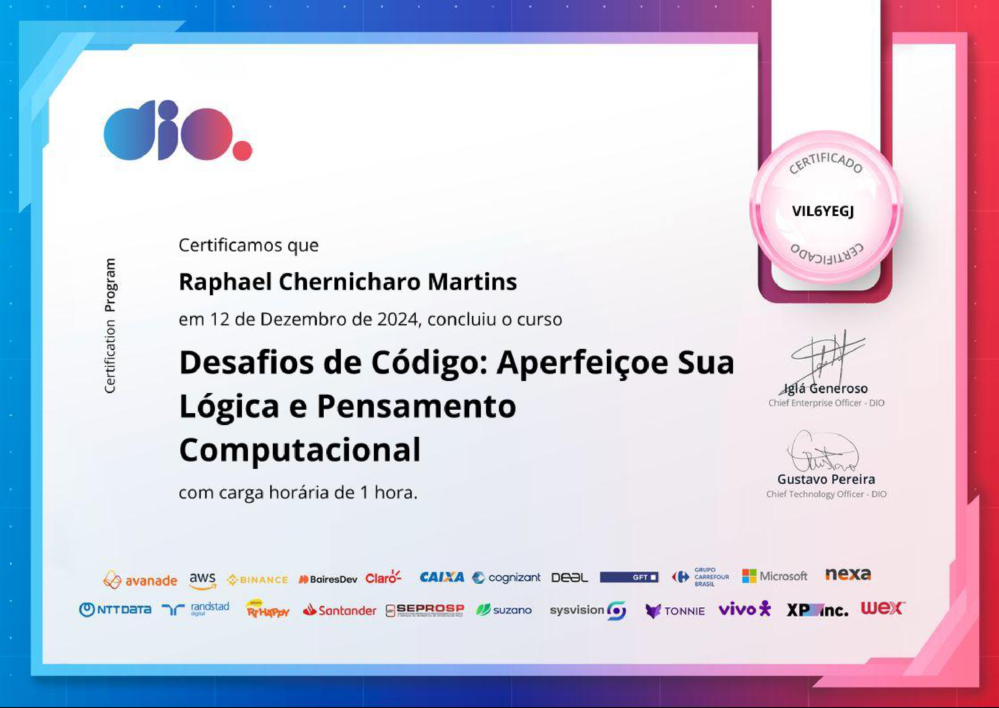
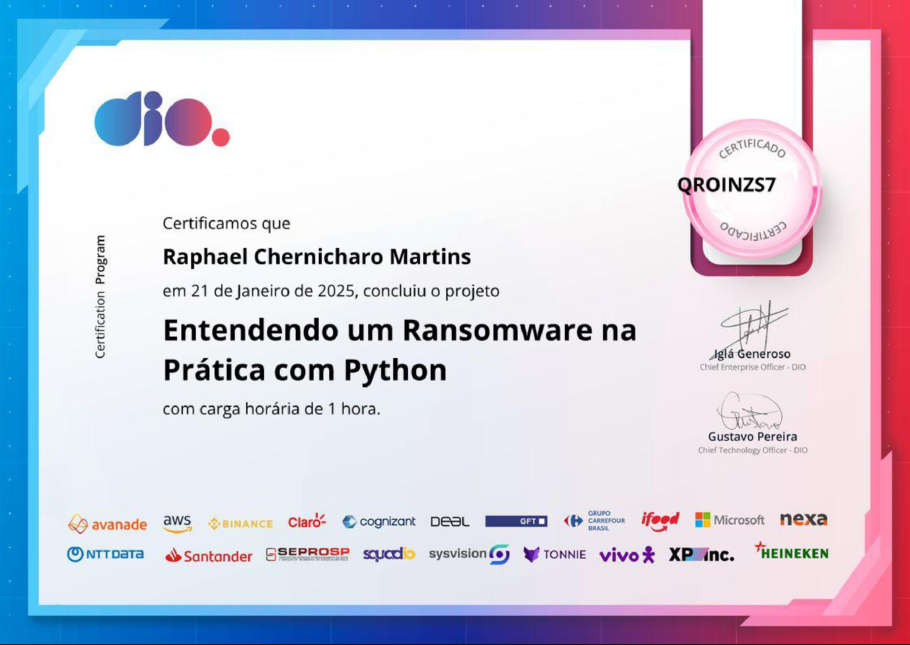

Infraestrutura & Suporte · Desenvolvimento Full-Stack · Automação & QA
Atuo na linha de frente de TI do Cartório do 2º Ofício de Itaboraí, administrando
servidores (Active Directory / GPOs), redes corporativas e estações de trabalho. Construo sistemas internos,
automações em Python e aplico práticas de testes automatizados para manter operações críticas estáveis.
Sou Raphael Chernicharo Martins, estudante de Ciência da Computação na
Universidade Estácio de Sá (previsão de formatura para dez/2027), residente em Itaboraí - RJ.
Minha trajetória profissional foi construída com os pés no chão da operação: suporte HelpDesk de alta
demanda, infraestrutura de redes, montagem de hardware e administração de servidores Windows Server
com Active Directory. Ao longo dessa rotina, também desenvolvi um sistema proprietário completo para
monitoramento da infraestrutura do cartório onde trabalho.
Sou movido pela curiosidade de entender como as coisas funcionam por dentro. Isso me levou a estudar
e praticar diversas áreas: desenvolvimento web full-stack (React, Next.js, FastAPI),
cibersegurança defensiva, automação de processos com Python, e mais
recentemente Garantia de Qualidade (QA) com testes E2E automatizados. Acredito que um
bom profissional de tecnologia precisa ter essa visão ampla — saber tanto diagnosticar um problema de
hardware quanto projetar uma arquitetura de software resiliente.
LocalizaçãoItaboraí, Rio de Janeiro - RJ
GraduaçãoCiência da Computação — Estácio
IdiomasPT 🇧🇷 · EN 🇺🇸 · ES 🇪🇸
HabilitaçãoCNH Categoria B
// experiência
Trajetória Profissional
Auxiliar de Cartório no Setor de TI
Cartório do 2º Ofício de Itaboraí
jun 2025 – atual
Suporte Técnico & HelpDesk: Atendimento ágil a incidentes críticos nos setores
(estações, totens de atendimento NextQS e parque de impressão), garantindo suporte a softwares cartorários
e edição documental sem paralisações.
Infraestrutura & Redes: Montagem, padronização de imagens de SO, manutenção
preventiva de hardware, switches, nobreaks e gerenciamento do cabeamento lógico estruturado.
Participação ativa no redesenho da rede corporativa interna para melhorar desempenho e segmentação.
Active Directory & Cibersegurança: Administração de contas de usuário e políticas de
grupo (GPOs) no Windows Server. Monitoramento de segurança em tempo real com Kaspersky EDR e controle de
acessos por privilégios mínimos.
Sistema Proprietário de Monitoramento: Desenvolvimento de uma suíte completa de
ferramentas web internas (React + FastAPI) para monitoramento de infraestrutura, Active Directory,
processamento de documentos pesados e dashboards operacionais em tempo real via WebSockets.
Automação de Rotinas com Python: Desenvolvimento de scripts para inventário lógico e
físico de máquinas, visualizadores de logs customizados e cruzamento de dados.
Operações & Contingência (SRE): Gestão diária de rotinas de Backup (servidores locais,
NAS e nuvem), abertura e acompanhamento de chamados com fornecedores via GLPI e controle de ativos de TI.
Compliance & Digitalização: Envio de informações para plataformas regulatórias
(ONR, Ofício Eletrônico) e apoio contínuo em sistemas de digitalização e modernização do acervo RGI.
Windows ServerActive DirectoryKaspersky EDRAutomação PythonBackups & NASGLPI
Estagiário de TI
set 2024 – mai 2025
Suporte presencial diário a colaboradores, manutenção de estações de trabalho e padronização de rotinas operacionais.
Técnico de Informática (Autônomo)
Serviços Especializados em TI
2019 – atual
Montagem completa de computadores sob medida para alto desempenho e produtividade corporativa.
Consultoria técnica em compatibilidade de peças e otimização de custo-benefício para clientes.
Manutenção preventiva avançada: limpeza química de componentes, troca de interface térmica e melhoria do fluxo de ar.
Diagnóstico preciso de hardware com ferramentas de estresse, testes de integridade de disco (SMART) e recuperação de SO.
Montagem de HardwareCable ManagementDiagnóstico de FalhasAtendimento Técnico
Monitor de Informática
Microlins — Niterói, RJ
mai 2023 – set 2023
Suporte técnico a alunos e manutenção do laboratório com mais de 30 máquinas em rede.
Elaboração de materiais didáticos e apoio no ensino de lógica de programação, pacote Office e noções de web.
Orientação individual para resolução de dúvidas e desenvolvimento de autonomia técnica nos estudantes.
DidáticaManutenção de LaboratórioTreinamentoSuporte a Usuários
// formação
Formação Acadêmica
Ensino Superior — Bacharelado (Em andamento)
Ciência da Computação
Universidade Estácio de Sá — Itaboraí, RJ
mar 2024 – atual (conclusão: dez/2027)
Ensino Médio — Regular (Concluído)
Ensino Médio Regular
CEIPS — Centro Educacional de Itaboraí Pedro e Santana
fev 2019 – dez 2021
// habilidades
Tech Stack & Competências
Qualidade de Software (QA) & Testes
Em Aprendizado Contínuo
Playwright (E2E) Planos de Teste (Test Plans) Triagem de Bugs (P0/P1/P2) Testes de Regressão Integração Sheets & Discord (QA Sync) Validação de Schemas (Zod / Pydantic) Auditoria de Rede (HTTP Status & Payloads) Telemetria de Console & Erros JS
Windows ServerActive Directory (GPOs)Linux (Debian / Ubuntu)Redes TCP/IP & SubnetsSwitches & RoteamentoGestão de TI (GLPI)Rotinas de Backup (NAS / Nuvem)Nobreaks & Energia Crítica
Cibersegurança Defensiva
Kaspersky EDRConformidade LGPDHardening de SO (Windows/Linux)Prevenção a RansomwarePolíticas de Acesso Mínimo (RBAC)Autenticação MFABloqueio de Telemetria
Hardware & Manutenção Avançada
Montagem & Cable ManagementBateria de Estresse (AIDA64 / FurMark)Saúde de Discos (CrystalDisk)Análise de BSOD (BlueScreenView)Deploy de Imagens (Ventoy / Rufus)Substituição Térmica
DevTools, Dados & Produtividade
Git & GitHubVS CodeGoogle Sheets API (gspread)Excel Avançado & Power QueryPandas & NumPySQLite / PostgreSQLIA Aplicada (Gemini, Claude, Copilot)
// aprendizado contínuo
Cursos & Certificações
2026
Bootcamp Bradesco — GenAI, Dados & Cybersecurity
DIO.me
Formação completa abrangendo esteiras ETL com Python e Pandas, modelagem relacional em SQL, computação
científica com NumPy e engenharia de prompt com IA Generativa aplicada à automação de TI.
Capacitação prática em arquitetura de bancos de dados relacionais (SGBD), elaboração de consultas SQL
complexas (JOINs, agrupamentos), processos de ETL e construção de dashboards com apoio de IA.
SQL AvançadoArquitetura de BancoETL Power QueryDashboardsMicrosoft Copilot
Em andamento
Garantia de Qualidade & Automação E2E (Playwright)
Estudos Contínuos & Prática
Aprofundamento na escrita de testes end-to-end com Playwright, auditoria de integridade de endpoints HTTP,
telemetria de console no navegador, mock de requisições e integração contínua de relatórios de QA.
Playwright E2ETestes de RegressãoQA TelemetryHTTP InspectionBug Lifecycle
out 2024
Bootcamp Cibersegurança #2 — Santander (28h)
DIO.me
Pentest & Red TeamingRansomware & PythonEngenharia SocialAtaques MiTM & PhishingAnálise de VulnerabilidadesHardening de Redes
Módulos especializados:





+16
set 2024
Endpoint Security
Cisco Networking Academy
Antimalware & EDRSegurança de DispositivosProtocolos IP / TCP / UDPPrevenção de Intrusões
jul 2024
HTML5 & Web Design (40h)
Curso em Vídeo
Semântica e AcessibilidadeCSS3 ResponsivoIntegração com JavaScriptDeploy e Boas Práticas
mai 2024
Segurança da Informação (80h)
Curso em Vídeo (Módulos 00 ao 03)
Conformidade LGPDPrevenção a PhishingPolíticas de MFAEstratégia de BackupsHardening de Redes Wi-Fi
mai 2024
Lógica de Programação (10h)
Universidade Estácio de Sá
Algoritmos FundamentaisEstruturas de ControleResolução Lógica
abr 2024
Arquitetura de Hardware e SO (20h)
Curso em Vídeo
Circuitos e ProcessadoresGerenciamento TérmicoDeploy de SistemasTestes de Confiabilidade
fev 2024
Fundamentos da Informática e Redes
IBSEC
Protocolos de RedeArquitetura de ComputadoresAdministração WindowsTroubleshooting
set 2021
Excel Avançado (17h)
Udemy
Automação (Macros & VBA)Tabelas DinâmicasFunções Lógicas & MatrizesDashboards de Gestão
// portfólio de engenharia
Projetos & Aplicações Construídas
Web ApplicationOnline
How To Complete Dex
Tracker Interativo & Editor de Mapas (National Dex 100%)
Aplicação web moderna desenvolvida para jogadores de Pokémon FireRed & LeafGreen completarem a Pokédex sem guias
extensos. Conta com navegação interativa pelo mapa com Pan & Zoom suaves, editor de mapa inline com ferramenta de
flood fill no Canvas para remoção de fundos, autenticação em nuvem via Supabase e suporte a Living-Dex.
React 19TypeScriptViteTailwind v4ZustandSupabase BaaSCanvas API
Automação robusta desenvolvida em Python para integrar o Discord de equipes de tecnologia diretamente com a planilha
matriz de testes de QA (Google Sheets). Permite cadastrar, consultar e atualizar bugs P0 a P2 em tempo real via
Slash Commands e formulários modais, com disparos automáticos de relatórios diários de cobertura de testes e webhooks.
Python 3.9+discord.pyGoogle Sheets APIWebhooks Apps ScriptTriagem de Bugs (P0-P2)Automação QA
Arquitetura SPA Assíncrona & WebSockets em Tempo Real
Plataforma corporativa full-stack construída para atender às demandas de alta criticidade do 2º Ofício de Itaboraí.
Centraliza operações de monitoramento de infraestrutura, Active Directory e processamento massivo de documentos
pesados em uma interface única com backend em Python/FastAPI e frontend em ReactJS.
• Monitoramento de AD & Hardware: Leitura massiva do Active Directory via rede com tradução de logs
de logon/logoff e inventário de CPU/disco em dashboards operacionais.
• Manipulação em Lote de TIFF/PDF: Motor isolado de I/O de alta velocidade no padrão One-Hand
Workflow, suportando reordenação e extração de páginas pesadas sem estouro de memória.
• Auditoria Contínua: Rastreamento completo de alterações operacionais com histórico persistente.
ReactJS + FastAPIWebSockets em Tempo RealActive DirectoryManipulação IO (.TIF/PDF)Alta Disponibilidade
Web Application Open Source
DevPad
Project Notes & Task Management para Engenharia
Dashboard de alta produtividade para desenvolvedores rastrearem projetos técnicos, anotações de arquitetura e tarefas
diárias (estilo TickTick/Jira). Desenvolvido com Next.js 16 (App Router & Server Actions), banco relacional com Prisma ORM,
segurança por Row Level Security (RLS) estrito no Supabase e assistente inteligente integrado via Gemini API.
Extrator de Frames de Alta Precisão (Zero Data Leak)
Utilitário desktop 100% offline projetado para criadores de conteúdo e videomakers automotivos. Resolve as falhas de
tela verde e codecs HEVC/H.265 do Windows através de decodificação nativa em C++ (OpenCV/PyAV), com scrubbing instantâneo
por cache em RAM, lupa de foco de 2x a 6x, extração em rajada (burst) e exportação sem perdas em lote.
Aplicação moderna e veloz para extração e processamento de mídias de mais de 1.800 plataformas com yt-dlp. Conta com
carrossel interativo com player nativo, recorte por intervalo de tempo, fila assíncrona com telemetria em tempo real
via Server-Sent Events (SSE), empacotamento em lote em arquivo .ZIP e histórico persistente em SQLite.
Terminal financeiro desenvolvido para controle ágil de gastos, câmbio e carteiras de investimento (Cripto e Ações).
Conta com interface inspirada em planilhas de alta densidade, cálculo em tempo real de taxas e frações de ativos,
sincronização resiliente de cotações de mercado e sistema nativo de rotação diária de logs de auditoria.
Next.js App RouterTypeScriptZustandTailwindCSSAPIs em Tempo RealAuditoria SRE
Plataforma 100% offline criada para processamento de arquivos confidenciais sem qualquer envio de dados para servidores
externos (Zero Data Leak). Inclui manipulador avançado de PDFs, removedor de fundos de imagem por IA local com edição pixel
a pixel no canvas e compressão de imagens TIF para ambientes corporativos.
Plataforma web para catalogação e preservação da cultura de veículos clássicos e eventos automotivos do RJ. Apresenta
feed dinâmico de flagras com carrossel nativo, grid de eventos com categorização automática por Regex, métricas de
visualização em tempo real e painel administrativo protegido por tokens JWT com CRM de contatos.
Landing Page Institucional & Simulador de Orçamentos
Página comercial de alto padrão criada para empresa especializada em móveis planejados sob medida e obras civis no RJ.
Conta com simulador interativo de orçamento em 4 passos com disparo automático para o WhatsApp Business, galeria de projetos
filtrável por categoria e design system alternado com alto contraste.
Hardening de SO, Remoção de Bloatware & Privacidade
Script de automação agressivo projetado para estações corporativas e ambientes com alta carga de trabalho. Realiza o
hardening do sistema operacional, neutraliza telemetria invasiva de coleta de dados da Microsoft, elimina serviços
redundantes em segundo plano e expurga bloatware, restabelecendo a responsividade máxima do hardware.
PowerShellBatch ScriptHardening de SOMitigação de TelemetriaOtimização Extrema
Automação em Python desenvolvida para monitorar variações de preços no mercado da Steam. Executa rotinas contínuas de
polling consumindo APIs REST, converte cotações cambiais USD/BRL em tempo real, preserva séries históricas em disco e
dispara notificações nativas no sistema operacional (Plyer) quando os critérios de preço são atingidos.
Template comemorativo interativo com animações tridimensionais em CSS e JavaScript puro. Apresenta envelope virtual
animado em perspectiva 3D que revela uma carta ao ser aberto, sistema de partículas dinâmicas em segundo plano, tocador
de música integrado e galeria de fotos responsiva com suporte a lightbox.
CSS 3D AnimationsVanilla JavaScriptGlassmorphism UIAudio IntegrationNetlify Deploy
Estou aberto a oportunidades profissionais nas áreas de Infraestrutura de TI, Suporte Técnico, Garantia
de Qualidade (QA) e Desenvolvimento, além de projetos e freelas. Respondo com rapidez!